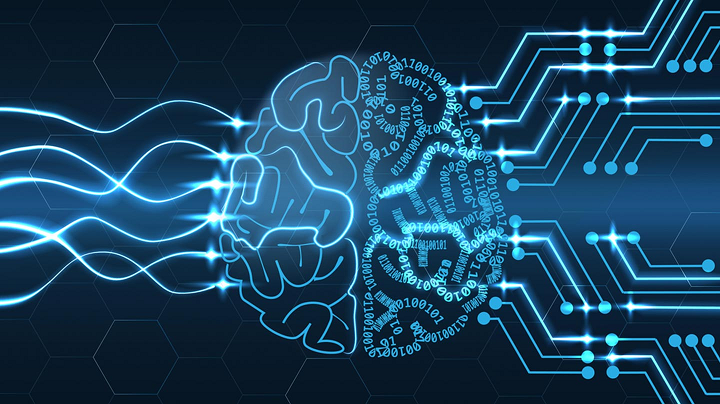

Introduction
LINKS
- MAIN PAGE
- Introduction
- Applications
- Types of artificial intelligence
- Artificial Intelligence Philosophy
Artificial intelligence (AI) is a young discipline of sixty years, which is a set of sciences, theories and techniques (including mathematical logic, statistics, probabilities, computational neurobiology, computer science) that aims to imitate the cognitive abilities of a human being. Initiated in the breath of the Second World War, its developments are intimately linked to those of computing and have led computers to perform increasingly complex tasks, which could previously only be delegated to a human.
However, this automation remains far from human intelligence in the strict sense, which makes the name open to criticism by some experts. The ultimate stage of their research (a "strong" AI, i.e. the ability to contextualize very different specialized problems in a totally autonomous way) is absolutely not comparable to current achievements ("weak" or "moderate" AIs, extremely efficient in their training field). The "strong" AI, which has only yet materialized in science fiction, would require advances in basic research (not just performance improvements) to be able to model the world as a whole.
